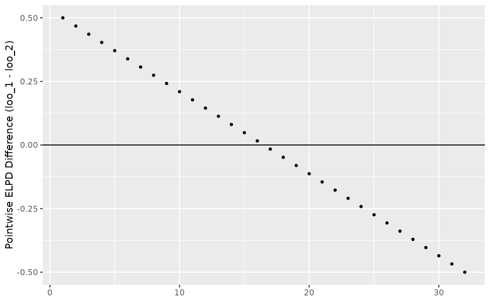
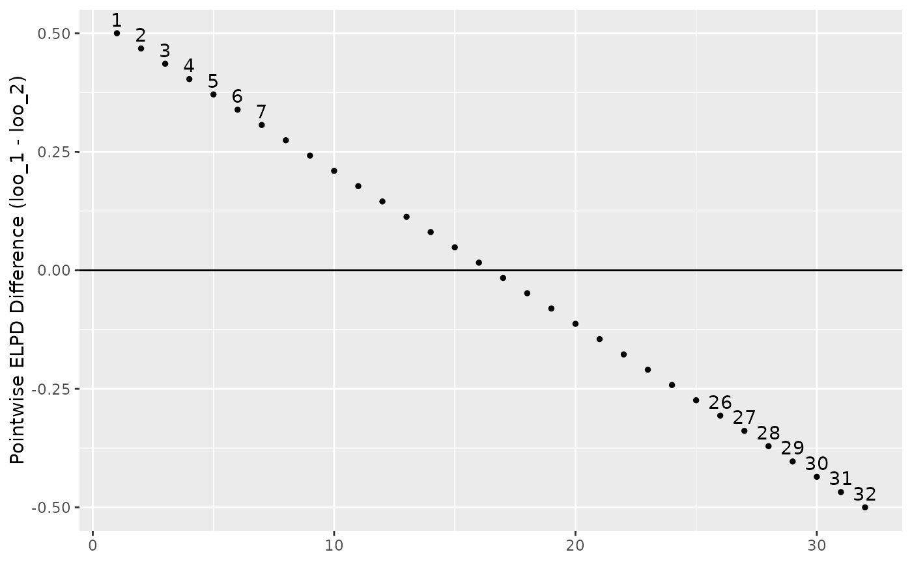
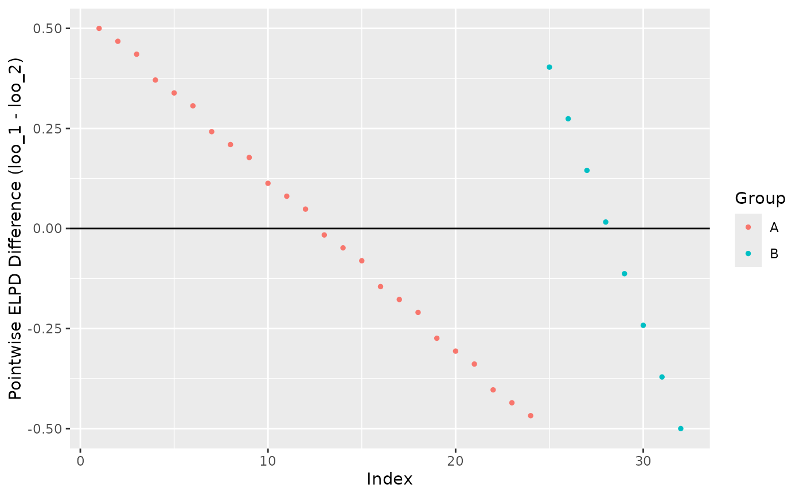

The LOO difference plot shows how the ELPD of two different models
changes when a predictor is varied. This can be useful for identifying
opportunities for model stacking or expansion. Pointwise differences
are computed as loo_1 - loo_2, so positive values indicate better
predictive performance for loo_1.
Usage
plot_loo_difference(
y,
loo_1,
loo_2,
group = NULL,
size = 1,
alpha = 1,
jitter = 0,
sort_by_group = FALSE,
label_threshold = NULL,
labels = NULL
)Arguments
- y
A vector of observations.
- loo_1, loo_2
Objects returned by
loo().- group
An optional grouping variable with the same length as
y. Points are colored according to group membership.- size, alpha
Point size and opacity passed to
ggplot2::geom_point().- jitter
Amount of horizontal jitter passed to
ggplot2::position_jitter().- sort_by_group
If
TRUE, observations are ordered bygroupand the x-axis is replaced by a sequential index. The suppliedyvalues are therefore not used as x coordinates. Plotting by index can be useful when categories have very different sample sizes. To control the group order, supplygroupas a factor with levels in the desired order.- label_threshold
Optional nonnegative threshold for labeling observations. Observations for which the absolute pointwise ELPD difference exceeds this value are labeled. If
NULL, no observations are labeled.- labels
Optional vector of labels with the same length as
y, used for observations selected bylabel_threshold. IfNULL, observation indices are used.
Value
A ggplot2::ggplot() object.
References
Gabry, J. , Simpson, D. , Vehtari, A. , Betancourt, M. and Gelman, A. (2019), Visualization in Bayesian workflow. J. R. Stat. Soc. A, 182: 389-402. doi:10.1111/rssa.12378 (journal version, preprint arXiv:1709.01449, code on GitHub)
Examples
# Artificial example
log_lik <- example_loglik_matrix()
shift <- seq(-0.5, 0.5, length.out = ncol(log_lik))
log_lik_2 <- sweep(log_lik, 2, shift, FUN = "+")
loo_1 <- loo(log_lik)
loo_2 <- loo(log_lik_2)
plot_loo_difference(
seq_len(ncol(log_lik)),
loo_1,
loo_2
)

# Label observations with large pointwise ELPD differences
plot_loo_difference(
seq_len(ncol(log_lik)),
loo_1,
loo_2,
label_threshold = 0.3
)

# Create interspersed groups, then sort them in the plot
group <- rep(c("A", "A", "A", "B"), length.out = ncol(log_lik))
plot_loo_difference(
seq_len(ncol(log_lik)),
loo_1,
loo_2,
group = group,
sort_by_group = TRUE
)
